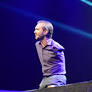
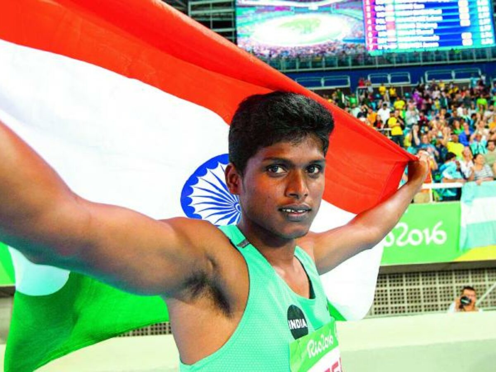

BE INSPIRED
Nick Vuj
Nick Vujicic (“voo-yi-chich”) is an Australian-American born without arms or legs who has become
a world-renowned speaker, New York Times best-selling author, coach and entrepreneur.
Nick faced tremendous obstacles in life from, living life without limbs, to being bullied at school and
fearful for his future with no purpose in sight
.
Without hope, his feelings of helplessness and isolation led him to attempt suicide.
Nick persevered through life’s
challenges and discovered
key principles which enabled him to find his purpose and
turn obstacles into opportunities; making him one of the most sought-after keynote speakers in the world!
Millions of people have found hope,
purpose and the
strength to overcome their challenges through Nick’s inspirational speeches and powerful coaching.
Stephen Hawking
Stephen Hawking (8 January 1942 – 14 March 2018) was one of the most famous scientist the world has ever seen.
Prof. Hawking was confined to a special wheelchair mounted with a computer that used to speak for him
He had lost speech due to ALS. Prof Hawking was an eminent theoretical physicist who made significant breakthroughs
about the functioning of the universe. Discovery of Hawking radiation is among several of his important scientific contributions.
Prof. Stephen Hawking was elected a Fellow of the Royal Society (FRS) in 1974. He was honored with the Presidential
Medal of Freedom, the highest civilian award in the United States in 2009.
In addition,
he received a long list of scientific achievements awards.
In fact, he may be the most famous person with disability in the world.
Mariappan
Mariyappan Thangavelu won the gold medal in the men’s High Jump T42 event to open India’s medal
tally at the Rio Paralympics on Friday..
Mariyappan was born in Periavadagampatti village, Salem district, Tamil Nadu,
one of six children (four brothers and a sister).
carrying bricks as a labourer until becoming
a vegetable seller, earning ₹100 (US$1.30) a day.
At the age of five, Mariyappan suffered permanent disability in his right leg
when he was run over by a drunk bus driver while walking to school.
The bus crushed his leg below the knee, causing it to become stunted.
Despite this setback, he completed secondary schooling.
He says that he didn't see himself as different from able-bodied kid
In March 2016, Mariyappan cleared a distance of 1.78 m (5 ft 10 in) in
the men's T-42 high jump event at the IPC Grand Prix in Tunisia,
qualifying him for the 2016 Summer Paralympics..
Jessica cox
Jessica Cox has proven from the moment she was born there
are no limitations to what she can accomplish.
Cox was born without arms due to a rare birth defect..
In 2008, Cox became the first licensed armless pilot.
When she isn't taking to the skies,
Cox is a motivational speaker, surfer, scuba diver and serves as
founder of the Rightfooted Foundation, a nonprofit that
helps people with disabilities.
.
Cox will visit Topeka on Aug. 3 and
stay overnight at Mission Creek Camp, where she will visit with adult campers.
She hopes to share with campers a message of resiliency
and help them see their disabilities don't limit them.